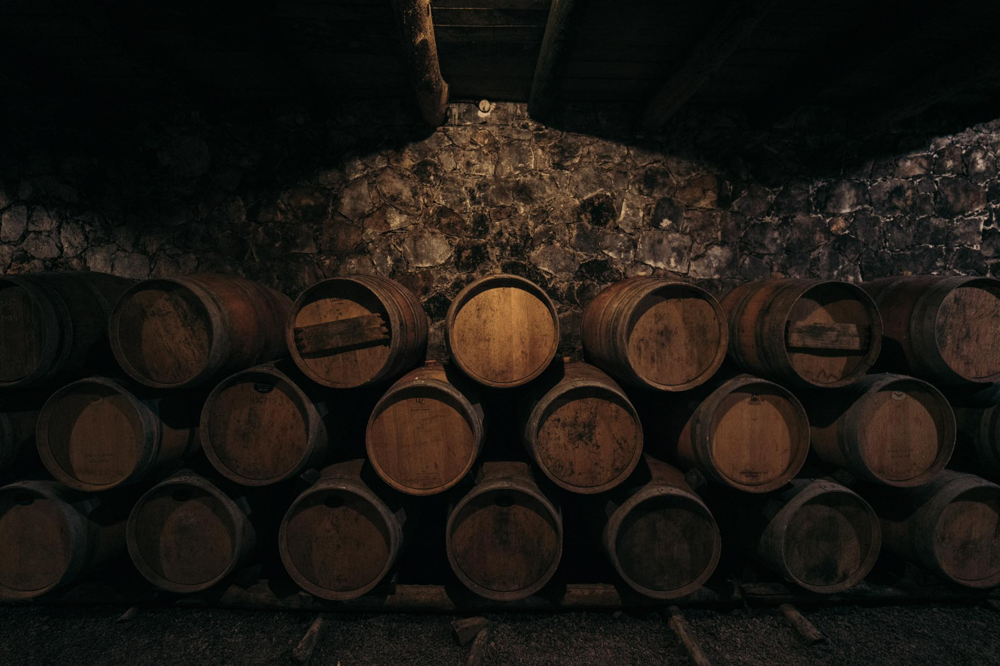

The Terroir of Volcanoes & Mountains
Greece houses some of the oldest ungrafted vines on Earth. Rooted deep within volcanic ash and rugged mountain slopes, these ancient vines have withstood the test of millennia. At Oinodion, we work directly with boutique micro-wineries resurrecting ancient methods—using amphorae, high-altitude sun, and sea breezes to bring you rare liquid art worthy of your private collection.
Every bottle tells a story of survival, culture, and geographic wonder. The volcanic soils of Santorini, the wind-swept terraces of the Aegean islands, and the dramatic altitudes of the mainland create a terroir that cannot be replicated anywhere else on the globe.

The Amphora & The Sea
Our micro-wineries refuse to compromise. By bringing back clay amphorae for fermentation and aging, we allow the wine to breathe naturally, capturing the raw, unaltered essence of the grape. Combined with the constant cooling of the Mediterranean sea breezes, the aging process becomes an act of patience and precision.
This is not commercial winemaking; it is a resurrection of heritage. We select only the barrels and amphorae that demonstrate exceptional character, ensuring that our curation remains elite, limited, and historically profound.